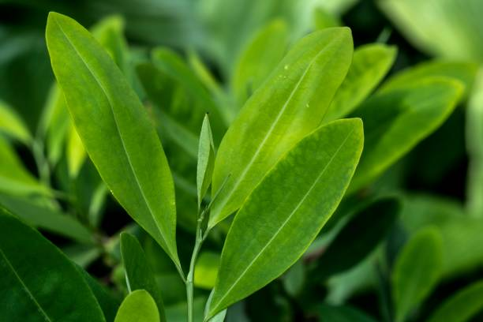
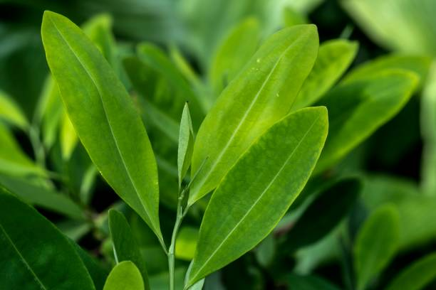
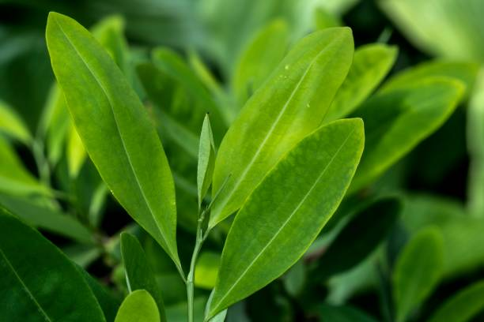

Bienvenido A mi reportaje coca en la mira!
Este reportaje web esta inspirado en dar a conocer que hay tras esta mata que ha producido riquezas sin fin con un conflicto que ha bañado en sangre y guerra a casi sur america.
¿Que debo saber sobre que es esto?:
La coca, una planta originaria de los Andes, ha tenido un impacto significativo en América Latina, tanto cultural como económicamente, pero también ha generado controversias y desafíos. Aquí te presento un resumen de lo que debes saber sobre la coca en la región:
Historia y uso tradicional La coca (Erythroxylum coca) ha sido cultivada y utilizada por pueblos indígenas en los Andes durante miles de años. Forma parte integral de la cultura y las tradiciones de comunidades como los quechuas y aymaras. Su uso tradicional incluye masticar las hojas (acullico) para combatir el mal de altura, el hambre y la fatiga, así como en rituales espirituales y medicinales. La coca también se utiliza para hacer té (mate de coca), que es consumido ampliamente en países como Bolivia, Perú, Colombia y Ecuador.
